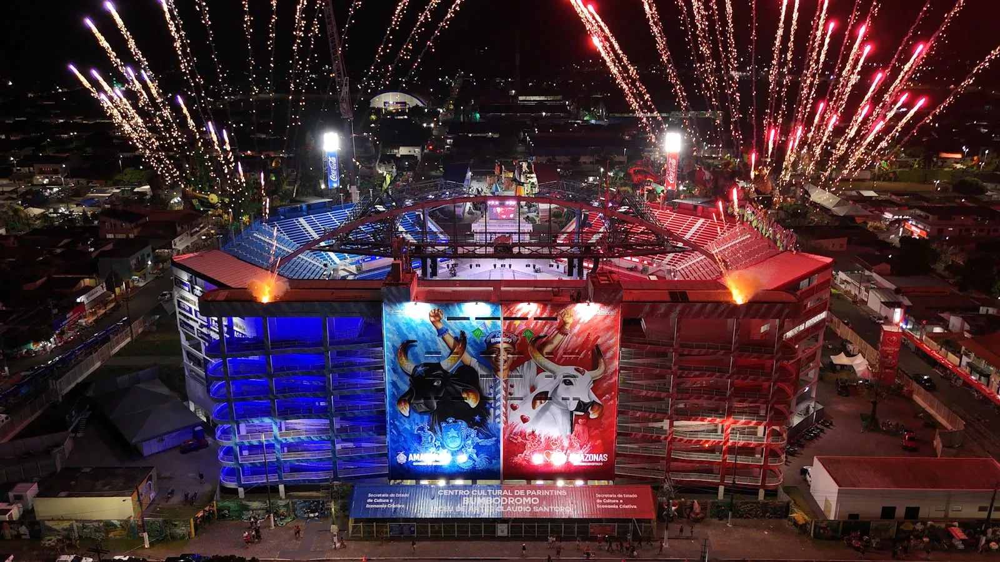
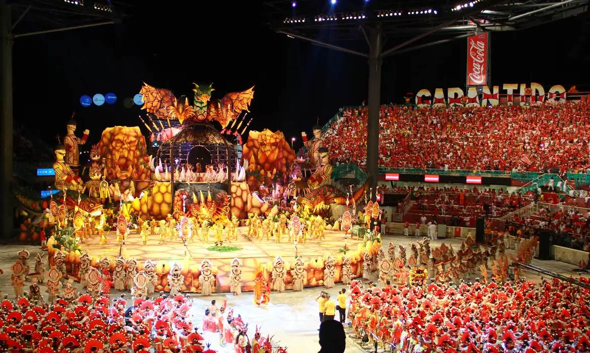

Every June, for three nights, a small river island in the Brazilian Amazon turns into the stage for one of the biggest open-air shows on the planet. Around 35,000 people squeeze into an arena built in the shape of a bull's head. The lights drop, and two rival teams, one red and one blue, go head to head with towering floats, indigenous legends, fire, drums and a kind of energy you really have to feel to understand. This is the Festival de Parintins. Nothing else in the Amazon comes close.

What Is the Festival de Parintins?
At its heart, Parintins is a folklore festival built around the Boi-Bumbá, a centuries-old Brazilian legend about a prized ox that dies and is brought back to life. Two associations, Boi Garantido and Boi Caprichoso, take turns retelling that story through music, dance and enormous allegorical floats, each one trying to outshine the other. What began as a local rivalry grew, decade after decade, into a huge celebration of Amazonian identity: its indigenous peoples, its river communities, its myths and the forest itself. In 2018 Brazil recognised it as part of the country's intangible cultural heritage.
When Is the Festival de Parintins 2026?
The 59th edition takes place on 26, 27 and 28 June 2026 (Friday, Saturday and Sunday), in the purpose-built arena known as the Bumbódromo, in the city of Parintins on the Amazon River. On each of the three nights, both bois present roughly two and a half hours of non-stop performance, judged across 21 official items.
Garantido vs Caprichoso: Pick a Side
Honestly, half the fun is choosing a side. Garantido wears red and white and carries a heart on its forehead. Caprichoso wears blue and white, with a star. The rivalry runs deep. Caprichoso fans won't even say the word "red" out loud, and Garantido fans do exactly the same with blue. When your boi performs, your half of the arena sings, jumps and waves as one. When the rival takes the floor, that same half goes completely silent. A stadium split clean down the middle, and the energy is something else.
This year, Garantido takes the theme "Parintins: Portal do Encantamento" (Parintins: Portal of Enchantment), while Caprichoso answers with "Brinquedo que Canta seu Chão", a love letter to the land that raised it.
Inside the Bumbódromo: What You'll See
Every presentation plays out like a full theatrical production. A few of the figures the crowd waits for:
- Cunhã-Poranga — the warrior beauty who stands for the strength and grace of indigenous women.
- Porta-Estandarte — the standard-bearer, who carries the boi's flag with real precision and pride.
- Levantador de Toadas — the lead singer whose voice pulls the whole arena along.
- Pajé — the shaman, the link between the spectacle and indigenous spirituality.
- Tribos and Tuxauas — hundreds of dancers and giant allegorical figures honouring Amazonian peoples.
- The floats themselves — three-storey mechanical creatures, river serpents and forest spirits that genuinely look alive.

Hear the Sound of Parintins
The festival doesn't just fill your eyes — it gets into your chest. The toadas are the songs that drive the arena, sung by thousands at once. Press play on the one that carried Parintins to the world:
"Tic, Tic, Tac" by Carrapicho — a toada written for Boi Garantido that became a worldwide hit in the 1990s.
How to Get to Parintins
Now the honest part: Parintins is hard to reach, and that's part of why it feels so special. The city sits on an island in the Amazon River, about 370 km east of the state capital, Manaus. There's no road in, so you either fly or you go by water. Flying from Manaus takes roughly 50 minutes, but book early, because the seats vanish months ahead. The slower, more traditional way is a regional riverboat from Manaus: 18 to 24 hours rocking in a hammock on deck, which is honestly half the adventure. Once the festival starts the island is packed, and plenty of people end up sleeping on boats tied along the riverbank.
Tickets and Planning Ahead
Tickets for the Bumbódromo run from grandstand seats all the way up to private boxes, and they go fast. The three-night passes and the best spots tend to sell out well ahead of time. So if Parintins is on your radar for 2026, sort out flights, tickets and a place to stay as early as you can. Going through a local operator who knows the festival inside out takes most of the headache out of the logistics.
Make It Part of a Bigger Amazon Trip
Here's the thing: Parintins is a destination in its own right, but to get there you'll be flying into Manaus anyway, the gateway to the Amazon. So why stop at the festival? Before or after all the colour and noise of the Bumbódromo, come and see the quieter side of the Amazon: the hush of the rainforest, the dark mirror of the Rio Negro, the easy warmth of a river community. Vista do Lago Jungle Lodge sits about an hour and a half from Manaus, in the Acajatuba community on the Rio Negro. It's the perfect place to slow right down, swim with pink dolphins and just breathe the jungle, either side of the festival.